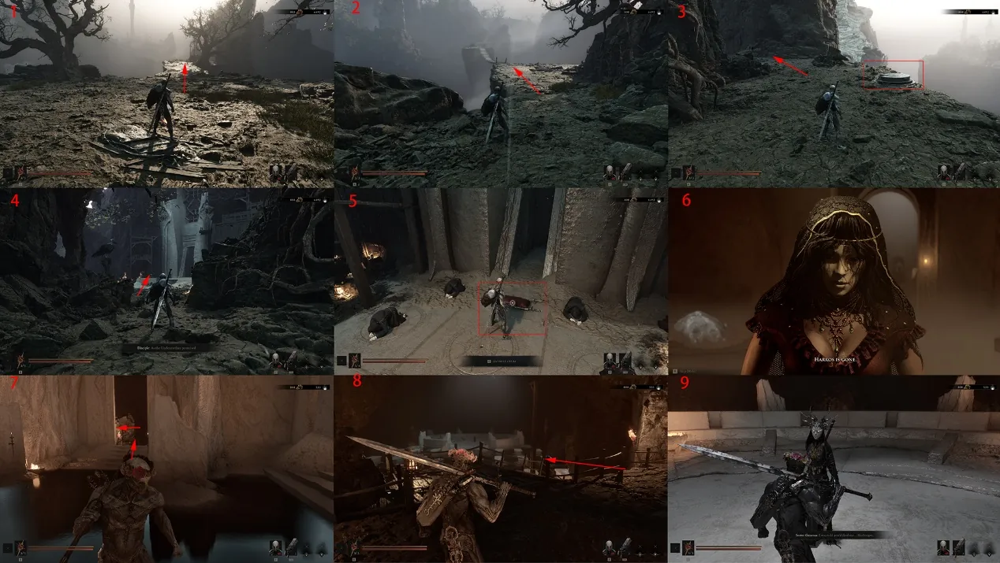
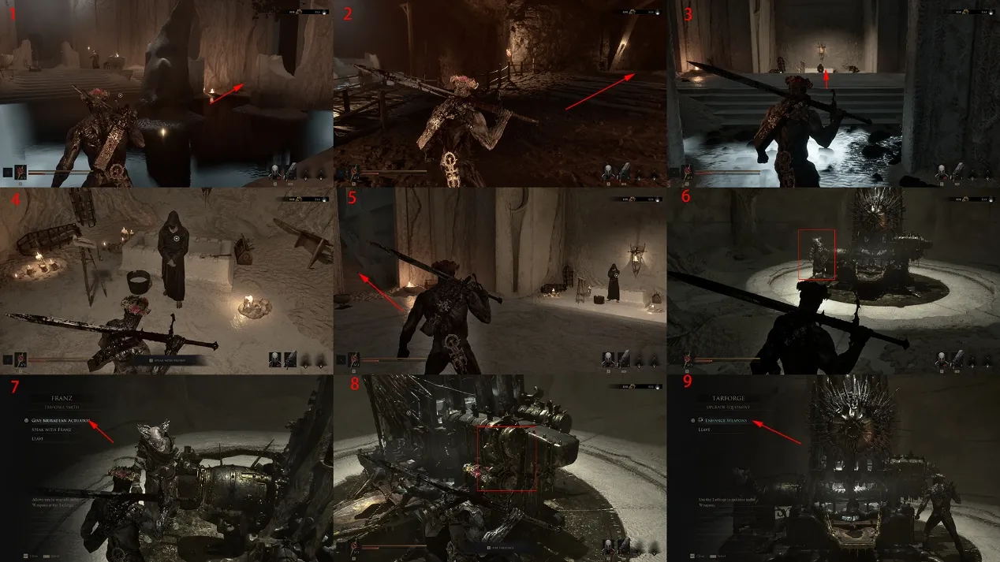
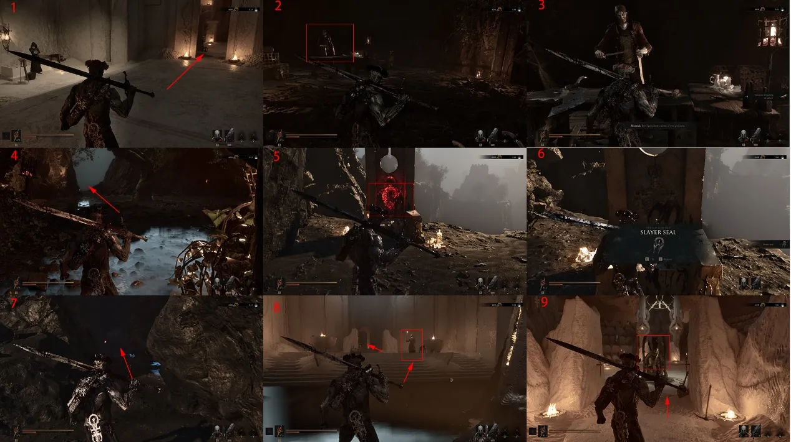
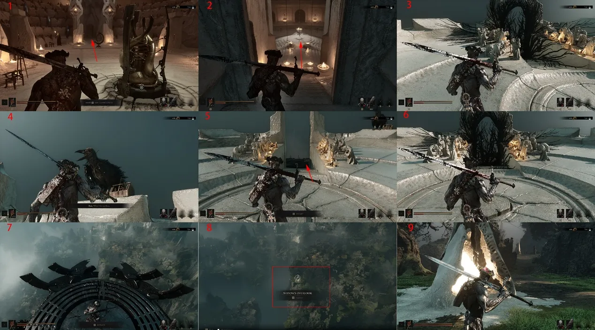

Use this short hub route to hand in the Sacred Egg, unlock the Keep services and activate the gateway to the next region.
Start
Marrow Keep gate
Key unlock
Dew Forge
Next area
Widow's Overlook

Route 01Run the approach path straight to the end; there are no meaningful forks. At the gate, hand over the Sacred Egg to enter Marrow Keep.

Route 02Speak with Zirella, enter the door behind her and unlock the Marrow Keep Rebirth Beacon. Go through the front door, take the left stairs and complete Sister Renessa's training to receive the Endless Mark.

Route 03Use the left cave to meet Vlakto, then climb to Franz. Turning in the correct exploration materials unlocks the Dew Forge, where weapon upgrades become available.

Route 04Follow the passage in front of the Forge to Merik and obtain the location of the Forgotten Crossbow. You can spend coin with Merik for weapon locations. Continue through the marked hall, use the Ectoplasm Siphon, ride the elevator up and activate the device to choose the next region.